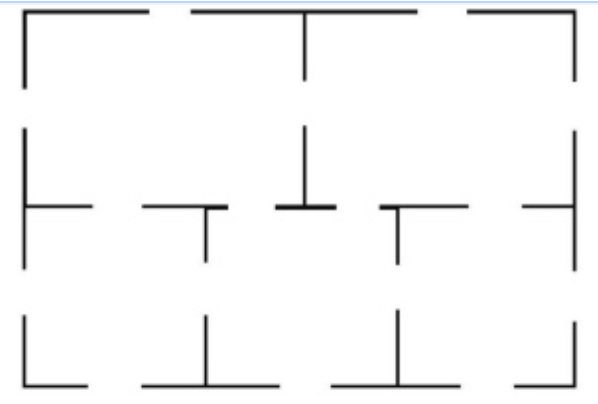

ES242. Data Structures and Algorithms I. Quiz 04
ES242. Data Structures and Algorithms I.
Quiz 04 Solutions
Issued: 24 Jan, 2023
Let n be a number given in decimal notation. Divide the number by two and push the remainder of each division onto to a cardstack until the number is reduced to 0. Then we pop all elements from the bottom. What is the output?
- The representation of n in binary.
- The reverse of the representation of n in binary.
- Meaningless and has nothing to do with n.
When we say “until the number is reduced to 0”, the successive divisions are meant to be applied on the quotient obtained from the previous divison operation. Also, note that we push to the top and pop from the bottom of the stack.
This is the standard algorithm for converting a number from decimal to binary notation. Let us look at an example execution with the number 19:
- the first divison yields a remainder of
1with a quotient of9, - the second divison yields a remainder of
1with a quotient of4, - the third divison yields a remainder of
0with a quotient of2, - the fourth divison yields a remainder of
0with a quotient of1, - the fifth divison yields a remainder of
1with a quotient of0,
We push 1, 1, 0, 0, and 1 on to the stack in that order. We pop from the bottom, so the output we get is the numbers pushed on to the stack in the same order as they were pushed: 11001 — note that if we popped from the top, then the output would have reversed this order.
The correct answer is that the output is the reverse of the representation of n in binary. We omit here a formal justification of this fact, but you can convince yourself by combining your understanding of the standard conversion algorithm along with the behavior of the stack operations.
You have a sequence \ell of A’s and B’s. You initialize an empty stack S.
You read the sequence \ell from left to right. Every time you see an A, you push 0 on to S. Every time you see a B, you pop from S. You never had to pop from an empty stack, and at the end, your stack is empty. Which of the following is true?
- The sequence \ell does NOT have an equal number of A’s and B’s.
- The sequence \ell started with ABBA.
- For any 1 \leq k \leq \ell, if you read first k entries of the sequence \ell the number of A’s is at least the number of B’s.
- For any 1 \leq k \leq \ell, if you read first k entries of the sequence \ell the number of B’s is at least the number of A’s.
Since the described behavior of the stack implicitly guarantees a bijection between the A’s and B’s in the string, the first option is not true. Also, consider the sequence \ell given by AB. It matches the described behavior, and does not begin with ABBA, so the second and fourth options are also false (set k = 1 for option four).
To see that the third option is indeed true, notice that if it was not, then there exists some k \in [\ell] for which the first k entries of the sequence \ell have strictly more B’s than A’s, but in this situation notice that we would have to attempt popping from an empty stack: but it is promised that this does happen.
You have a sequence \ell of A’s and B’s. You initialize an empty stack S.
You read the sequence \ell from left to right. Every time you see an A, you push 0 on to S. Every time you see a B, you pop from S. At some point, you had to stop because you were trying to pop from an empty stack. Which of the following is definitely true?
- The sequence \ell has an equal number of A’s and B’s.
- The sequence \ell started with ABBA.
- For some 1 \leq k \leq \ell, if you read first k entries of the sequence \ell the number of A’s is strictly more than the number of B’s.
- For some 1 \leq k \leq \ell, if you read first k entries of the sequence \ell the number of B’s is strictly more than the number of A’s.
The first option is not definitely true: for example, the sequence ABB would match the described behavior and does not have an equal number of A’s and B’s. The second option is also not necessarily true for similar reasons. The example of the sequence B rules out the third option. Note that the fourth option must be true, because if it were not, then we would have the behavior described in the previous question instead of what is described here.
Consider the floor plan shown below of a 5-room apartment.
Can you find a continuous line that pass through each door exactly once? The line does not have to end where it started. Note that there is space to move around the big enclosing rectangle.

- Yes
- No
Note that three rooms have five doors, so such a path is not possible.